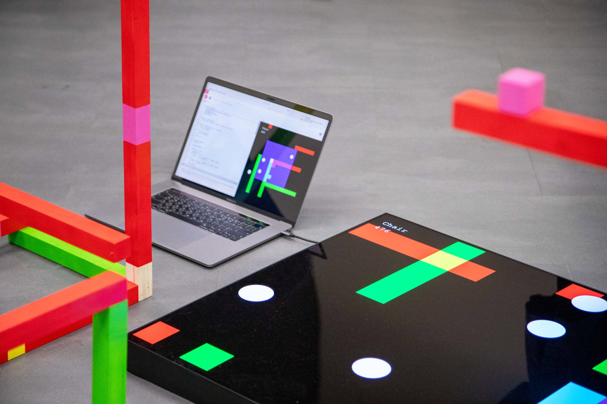
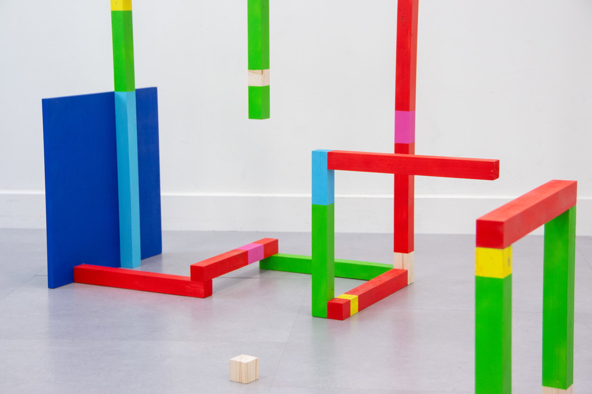
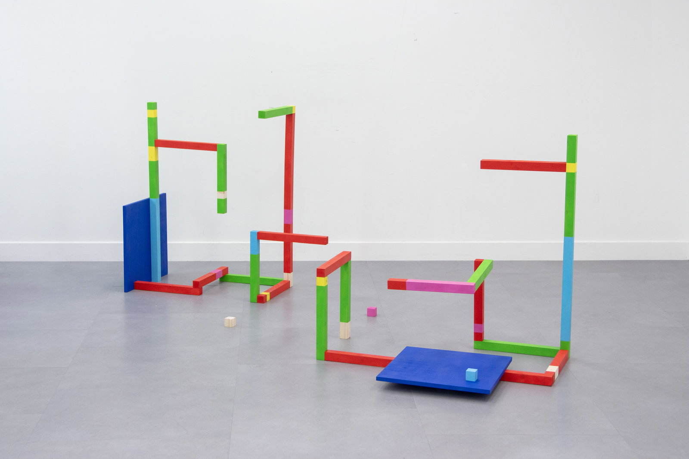
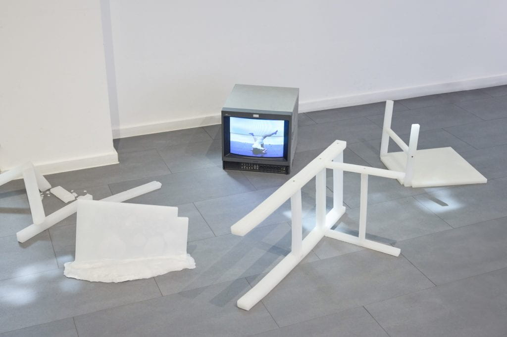
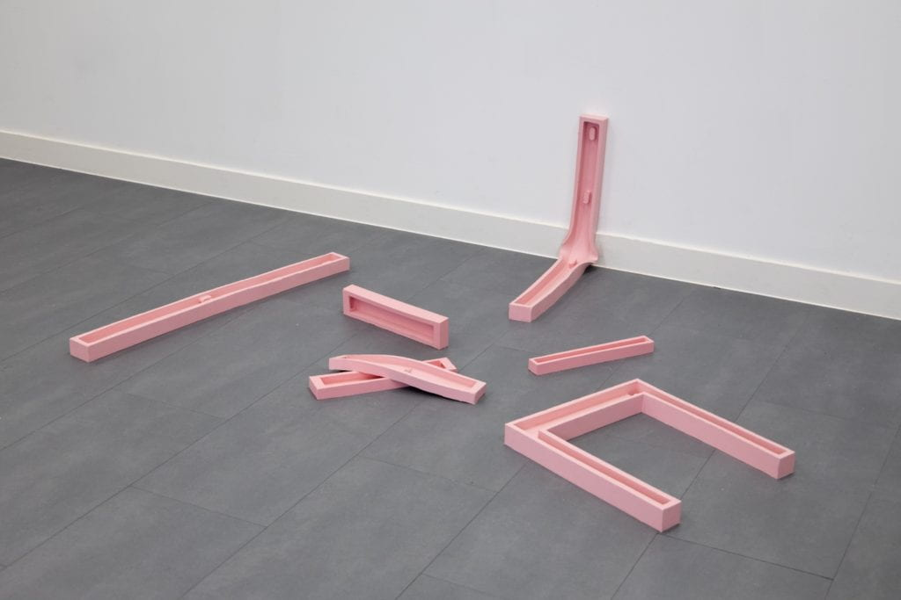
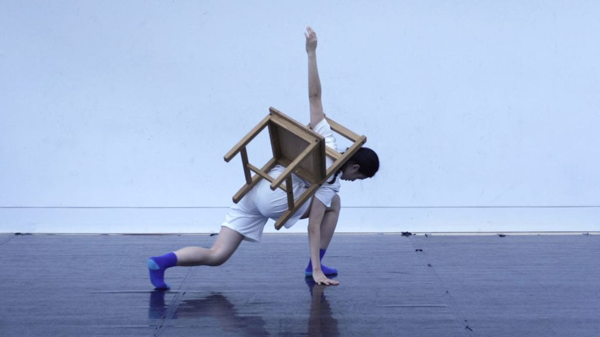

Latent Chair is a sculptural project by Jiwon Jang that studies how artificial intelligence perceives a chair, then rebuilds that perception by hand.[1] It is part of the second section of Yunso's Triangle, along with AI Nüshu and Cumulus.
Latent Chair, by Jiwon Jang, studies how artificial intelligence sees a chair, then rebuilds that sculpture by hand.[1] It is part of the second section of Yunso's Triangle, along with AI Nüshu and Cumulus.
Concept
The work asks how an AI sees a chair, and how a person might follow that way of looking. Chairs are studied from different angles, taken apart into elements and facets, and assembled again as new structures.
Jang describes the reconstruction as a departure from the model. The finished forms are made by what she calls de-computational intelligence: human judgement applied to a way of seeing that began with a machine.
Chairs are taken apart and assembled again. Jang calls the hand-made result de-computational intelligence: human judgement applied to a machine way of seeing.
-

Screen -

Elements
Form
The chairs exist in wood, wax, and silicone, and as a performance video.
The chairs exist in wood, wax, silicone, and performance.
-

Wood -

Wax -

Silicone -

Performance
References
- Jang, Jiwon (2024). The Latent Chair. Royal College of Art. 2024.rca.ac.uk. ↑